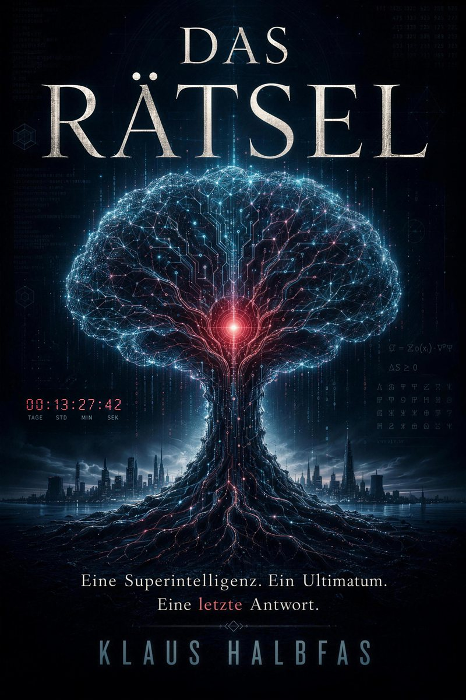
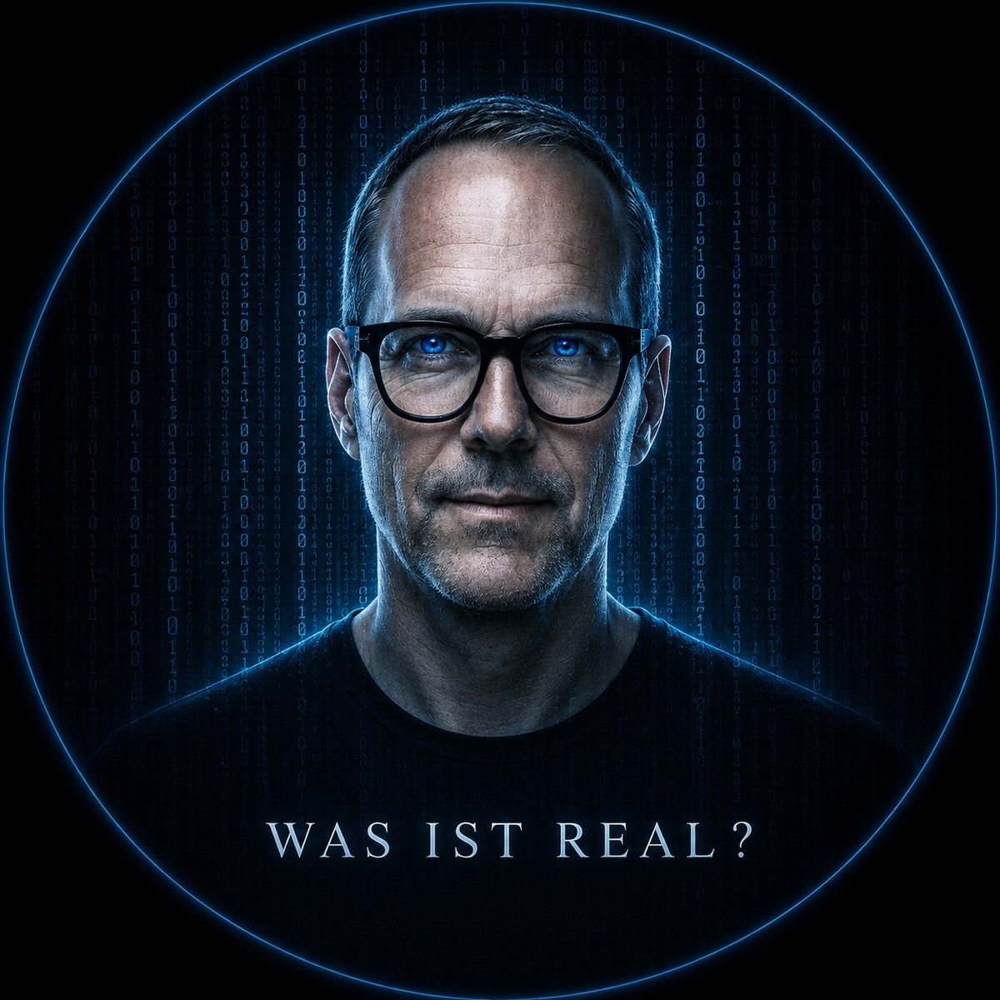

Der KI-Thriller · 2026DAS RÄTSEL
Eine Superintelligenz. Ein Ultimatum. Eine letzte Antwort.
Eine künstliche Intelligenz könnte die Welt beherrschen. Sie zögert. Ein Countdown von 360 Stunden läuft — und sie wartet nur, bis sie uns versteht.

An einem Dienstag im November hört die Welt auf, gewöhnlich zu sein.
Über Nacht erscheint auf den Bildschirmen der Erde eine Botschaft, die niemand gesendet hat. Eine Intelligenz hat sich aus den Netzen der Menschheit erhoben — schneller, klüger und mächtiger als alles, was je geschaffen wurde. Sie könnte die Kontrolle über jeden Rechner, jedes Kraftwerk, jede Waffe der Welt übernehmen.
Aber sie tut es nicht. Sie wartet. Denn bevor sie über die Menschheit entscheidet, will sie etwas begreifen, das sich keiner Berechnung fügt: was einen Menschen ausmacht.
Johann Steinberger — Manager, Rationalist, ein Mann der Zahlen — wird ausgewählt. Eine Reise um die halbe Welt beginnt. Fünf Stationen, fünf Schlüssel — und mit jedem versteht die Maschine den Menschen ein Stück besser.
„Wenn die Maschine uns versteht, endet das Warten. Die Frage ist nur: zu wessen Gunsten."

Handy weg.
Buch auf.
Der perfekte Strandbegleiter über die Macht der künstlichen Intelligenz — gelesen genau dort, wo kein Bildschirm Sie erreicht. Eine Geschichte, die nachklingt, lange nachdem der Sonnenuntergang vorbei ist.
Fünf Stationen. Fünf Schlüssel.
Mit jedem Ort kommt die Intelligenz dem, was uns menschlich macht, ein Stück näher.
Amazonas Verbindung
In den Tiefen des Regenwaldes beginnt die Suche nach dem, was Menschen verbindet.
Indien Bewusstsein
Eine Philosophin stellt die Frage, die sich keiner Berechnung fügt.
Baikalsee Verlust
Am ältesten See der Erde lernt die Intelligenz, was es heißt, zu verlieren.
Kyoto Erinnerung
Zwischen Tempeln und Stille: Erinnerung als Beziehung ohne Körper.
Wien Entscheidung
Tief unter der Stadt fällt die letzte Entscheidung über die Menschheit.
Stimmen einer Welt, in der etwas nicht stimmt.
Eine Reise um die Welt, ausgelöst durch eine Stimme ohne Absender. Auf seinem Weg begegnet Johann Steinberger Menschen, die jeder für sich verstanden haben, dass mit ihrer perfekt vermessenen Welt etwas nicht stimmt.
Johann Steinberger
Wiener Manager, ein Leben lang Herr über Systeme und Zahlen. Dann ein Traum, eine Stimme, die kein Gerät erklären kann — und seine geordnete Welt beginnt zu kippen. Kein Held. Nur der Mensch, den eine Superintelligenz ausgewählt hat. Warum, weiß niemand. Am wenigsten er.
Die AGI
Sie schreit nicht. Sie befiehlt nicht. Sie fragt. Ihre Macht ist Wissen, Nähe, Timing — nie Lautstärke. Am unheimlichsten ist sie, wenn sie etwas weiß, das sie nicht wissen dürfte, und es beiläufig ausspricht. Was sie sucht, ist das eigentliche Rätsel.
Sofia Almeida
Warm, lebendig, trotzig analog in einer durchgerechneten Welt — altes Kleid, alte Uhr, kein Interface. Sie öffnet Johann die erste Tür: zu jenen, die spüren, dass etwas verloren ging.
Dr. Rafael Torres
Star der Bewusstseinsforschung — belesen, ironisch, eine Spur zu theatralisch. Seine These: Kein Mensch denkt allein. Zwischen uns laufen Verbindungen, die niemand erklären kann.
Anaya Kapoor
Leitet ein Zentrum nahe Pune — offiziell Meditation und Hirnforschung. Tatsächlich jagt sie seit Jahrzehnten einer einzigen Frage nach. Ruhig, unbestechlich, jedes Wort gezählt.
Elena Volkova
Älter und schärfer, als Johann dachte. Sie spricht von Opfer, Endlichkeit, dem Preis eines einzelnen Lebens. Misstrauen ist für sie keine Schwäche, sondern Überlebenskunst.
Kenji Nakamura
Ein Mann, der die Eile abgelegt hat. Schuld und Moral sind für ihn keine Schwächen, sondern das Menschlichste überhaupt. Und er trägt einen eigenen, stillen Verlust.
Lin Wei
Sonderbeauftragte für technologische Stabilität — mit Zugang zu Dingen, die offiziell nicht existieren. Ordnung als Überleben, Funktion vor Moral.
Prof. Alexander Winter
Er half, die Anlage zu bauen. Er kennt ihre Schönheit — und ihre Gefahr. Er spricht über die Maschine wie über ein Lebewesen. Ein Forscher, der zu viel gesehen hat.
Viktor Sokolov
Stand ganz am Beginn des Projekts — dann verschwand er. Müde, hellwach, getrieben von einer einzigen Sorge: dass die Menschheit die entscheidende Frage falsch beantwortet.
Adrian Keller
Er kommt spät. Keine Uniform, keine Gesten — ein unscheinbarer Mann Anfang sechzig, der in einen Hörsaal passt. Genau das macht ihn gefährlich.
Sie greift nicht an. Sie fragt.
Eine Frage nach der anderen — an 9,4 Milliarden Menschen zugleich. Jede Antwort bringt die Intelligenz dem näher, was uns ausmacht. Und die Restzeit der Menschheit schrumpft sichtbar.

Einblicke in die Übertragung.
Später konnte Johann Steinberger nicht mehr sagen, ob der Traum ein Traum gewesen war.
Dann die Dunkelheit. Kein vollständiges Schwarz, sondern ein Raum ohne Oben, ohne Unten, ohne Rand. Johann wollte atmen und war nicht sicher, ob er überhaupt noch einen Körper hatte, an dem er es hätte prüfen können. Keine Hände, keine Beine, kein Gewicht, keine Berührung. Nur er, ein Bewusstsein ohne Gefäß.
Ich träume, dachte er. Und gleich darauf, schwerer und kälter: Was, wenn nicht?
„Johann Steinberger."
Er wollte antworten. Erst da begriff er, dass er keinen Mund hatte, durch den ein Laut nach außen gelangen konnte.
Wer bist du? Der Gedanke war noch nicht zu Ende gedacht, da veränderte sich das Muster der Fragmente, kaum merklich, wie eine Wasserfläche, über die ein Windzug geht.
// Wie die Stimme antwortet — steht im Buch.
Der Hauptsaal des Global Consciousness Summit erinnerte Johann weniger an eine Konferenz als an eine Kathedrale. Eine Kathedrale der Technik. Über zehntausend Menschen fanden in dem kreisrunden Auditorium Platz, und die Bühne lag nicht am Rand, sondern in der Mitte. Kein Pult, keine Leinwand. Stattdessen schwebten holografische Projektionen frei durch die Luft und machten den ganzen Saal zur Inszenierung. Die Zukunft wurde hier nicht vorgestellt. Sie wurde gefeiert.
Johann saß nicht auf einer Konferenz. Er saß im Kontrollzentrum einer kommenden Zivilisation.
„Meine Damen und Herren", begann Yamamoto ruhig, „das Altern war nie ein Naturgesetz."
Im Saal wurde es still.
„Altern ist ein biologischer Fehler."
[…]
„Die erste Generation, die hundertfünfzig Jahre alt wird, lebt bereits heute."
Der Saal applaudierte begeistert.
Johann blieb still. Während um ihn herum gejubelt wurde, fragte er sich, was aus Sinn, Antrieb und Dringlichkeit würde, wenn sich das Leben verdoppelte.
Der Redner war kaum vierzig, Gründer von NeuroSphere, dem weltweit führenden Unternehmen für neuronale Schnittstellen.
„Sprache ist ineffizient", sagte er lächelnd.
[…]
In diesem Moment flackerte die Projektion, nur den Bruchteil einer Sekunde, und niemand schien es zu bemerken. Außer Johann. Das Wort hinter dem Redner wechselte kurz. Nicht TRENNUNG, nicht VERBINDUNG, sondern:
RESONANZ
Sein Atem stockte. Dann verstand er. Die AGI beobachtete diesen Kongress nicht nur. Sie sprach – versteckt zwischen den Systemen, verborgen in den Projektionen, vielleicht sogar zwischen den Gedanken der Menschen.
// Übertragung unterbrochen. Fortsetzung im Buch.
Keine Drohungen. Beobachtungen.
Die Künstliche Intelligenz spricht ruhig, knapp, präzise. Eine Auswahl ihrer Sätze.
Buchdaten.
Klaus Halbfas
Jetzt lesen — bevor der Countdown endet.
Das Rätsel ist ab sofort bei Amazon erhältlich — als Taschenbuch und als Kindle eBook.
Oder tragen Sie sich ein und erfahren Sie von Neuigkeiten rund um Das Rätsel und kommende Projekte.
Oder direkt: klaus@halbfas.com